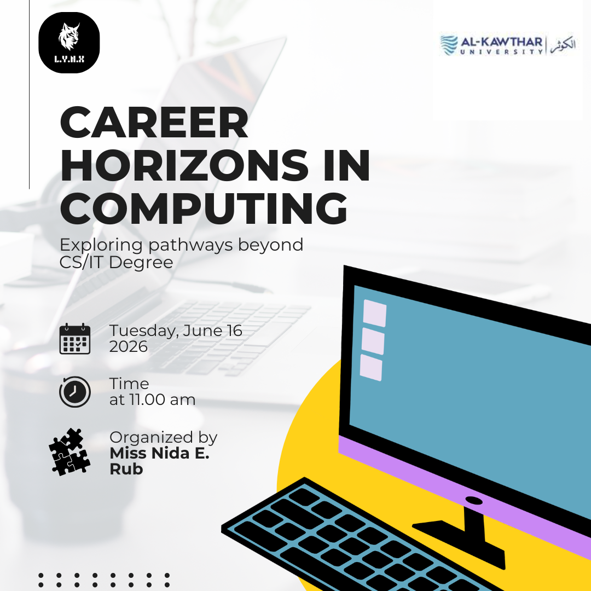
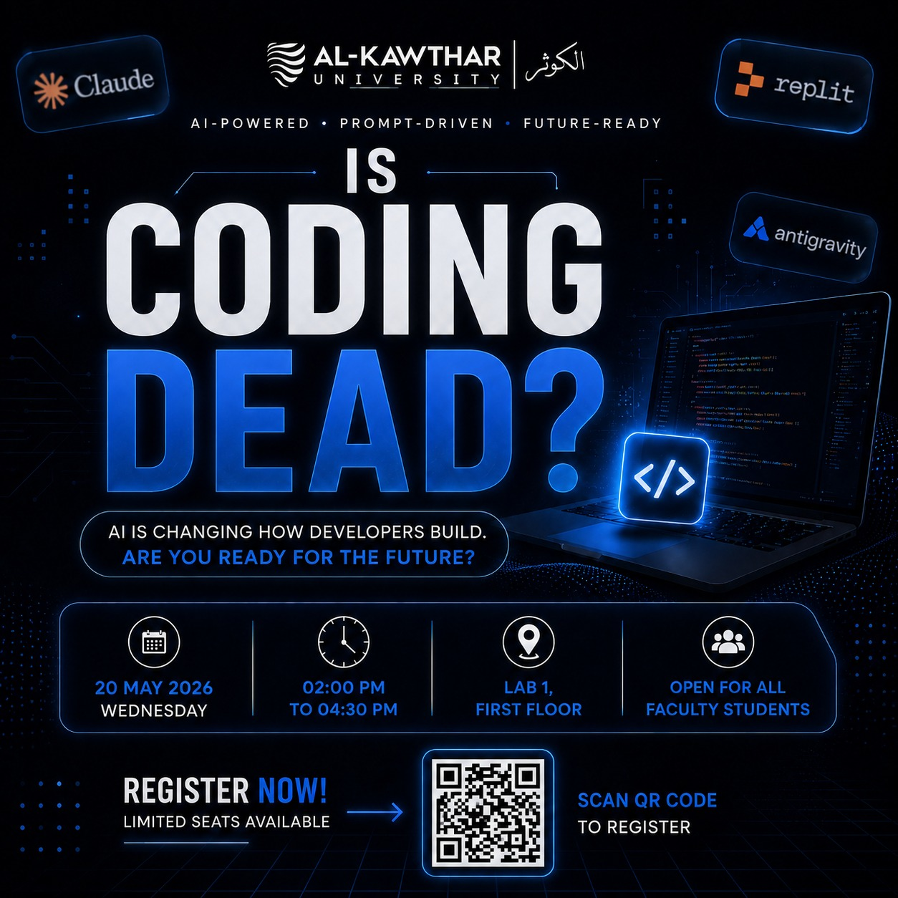
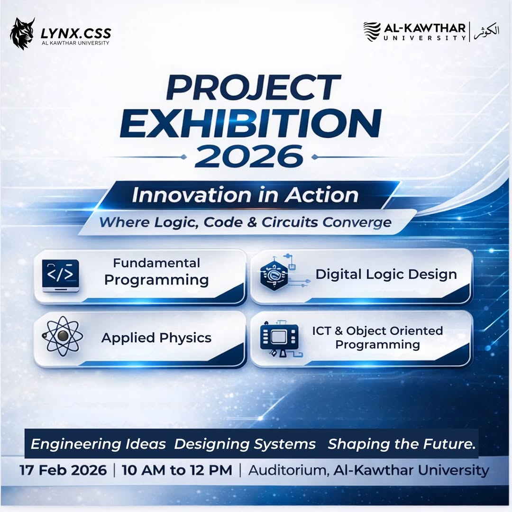
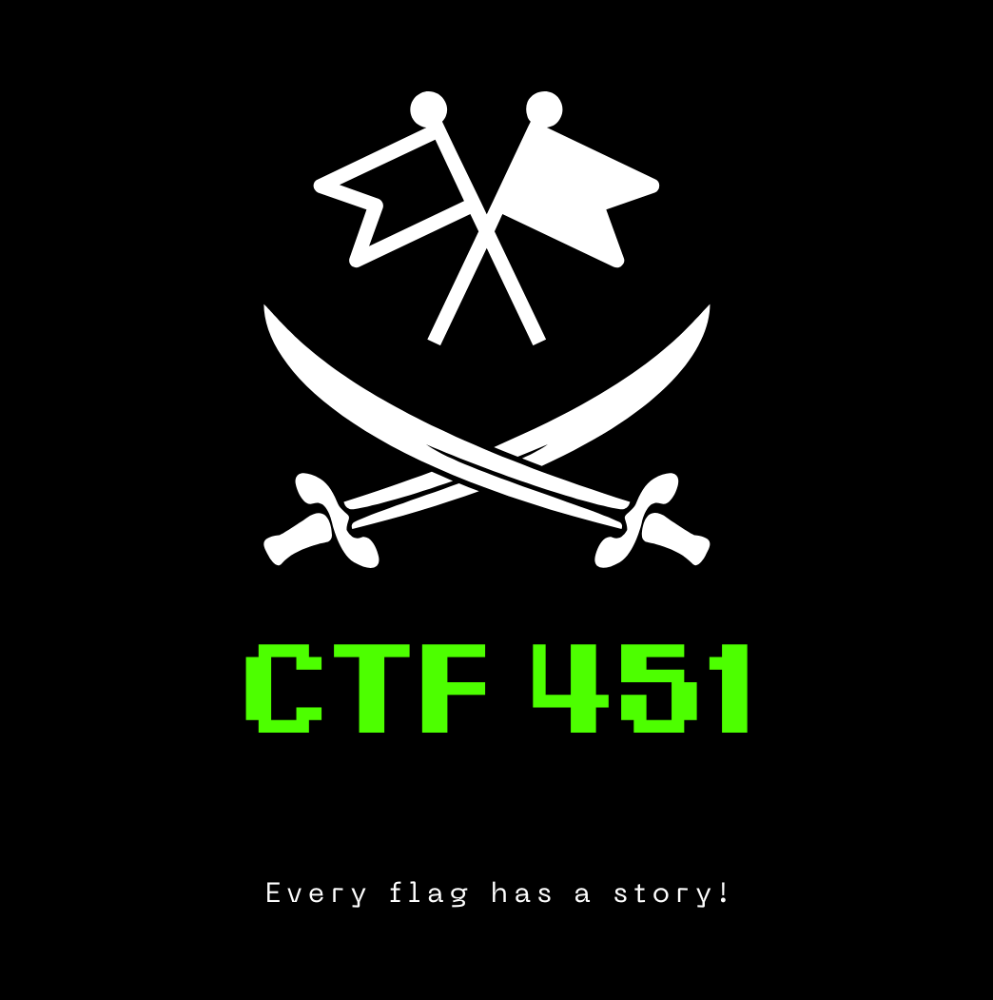
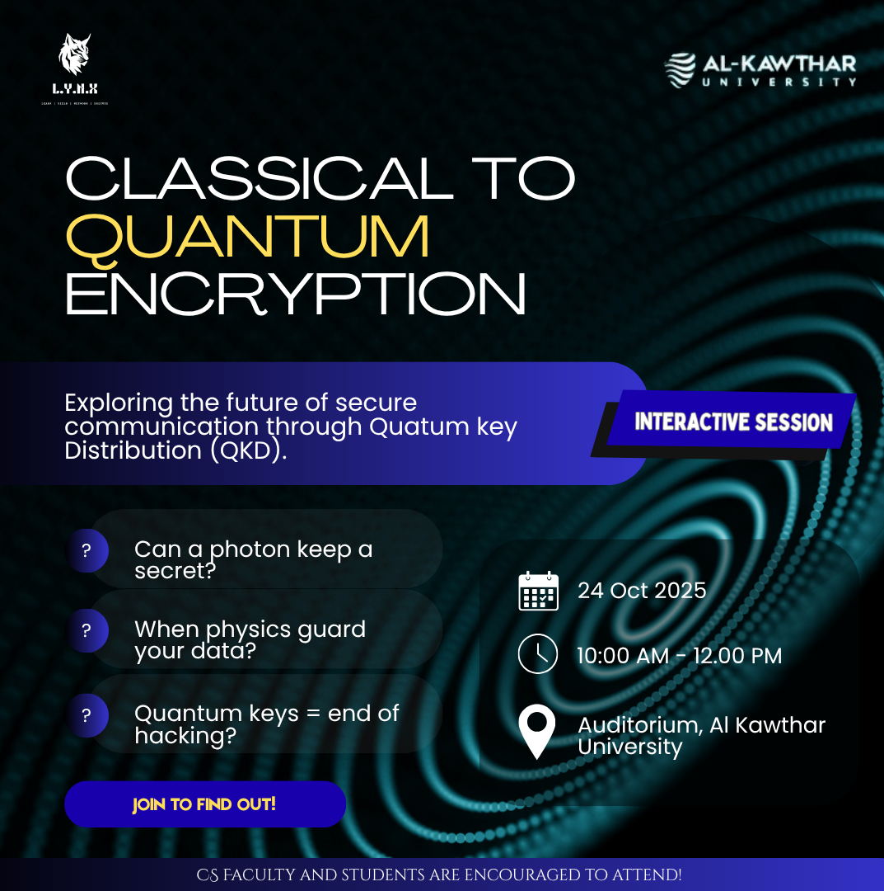
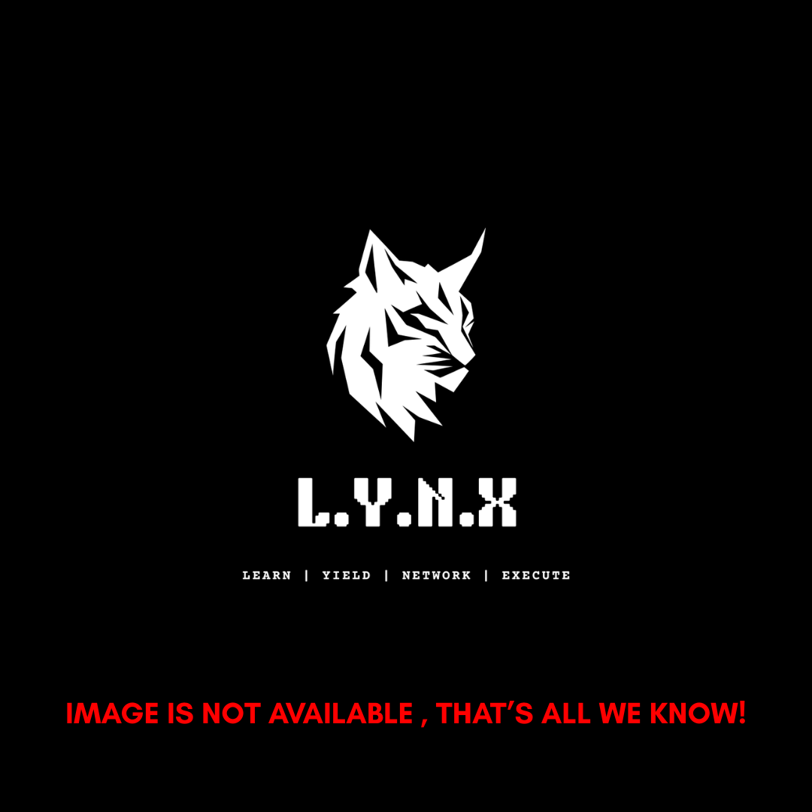
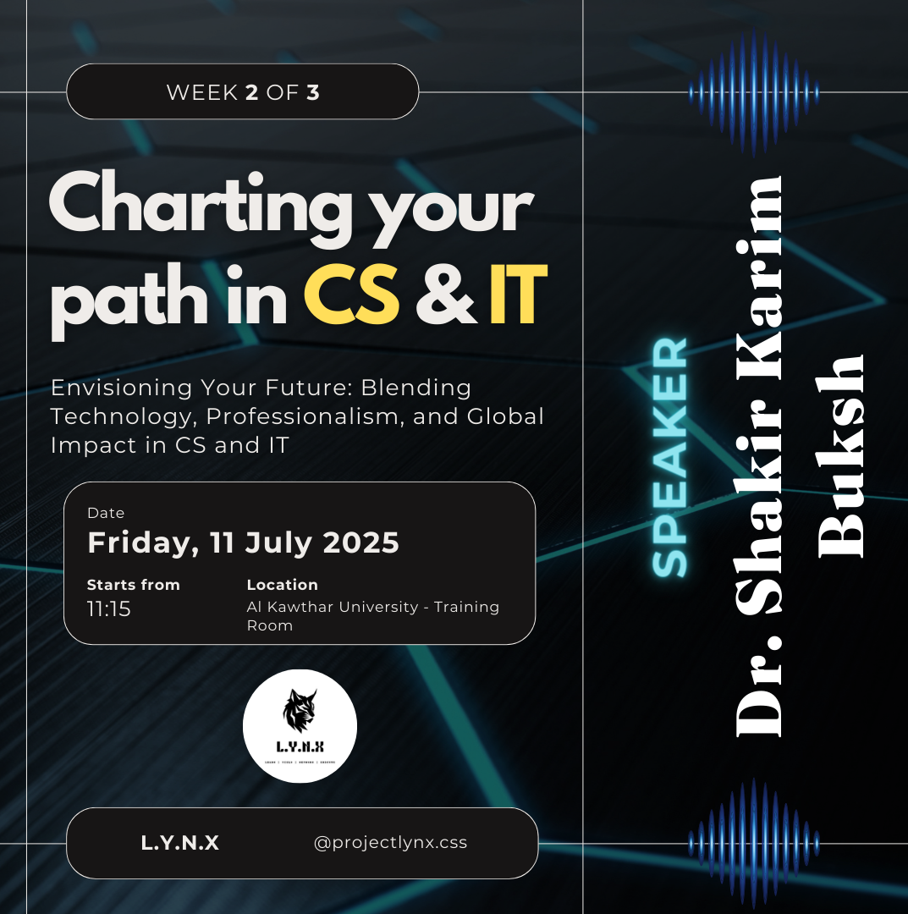
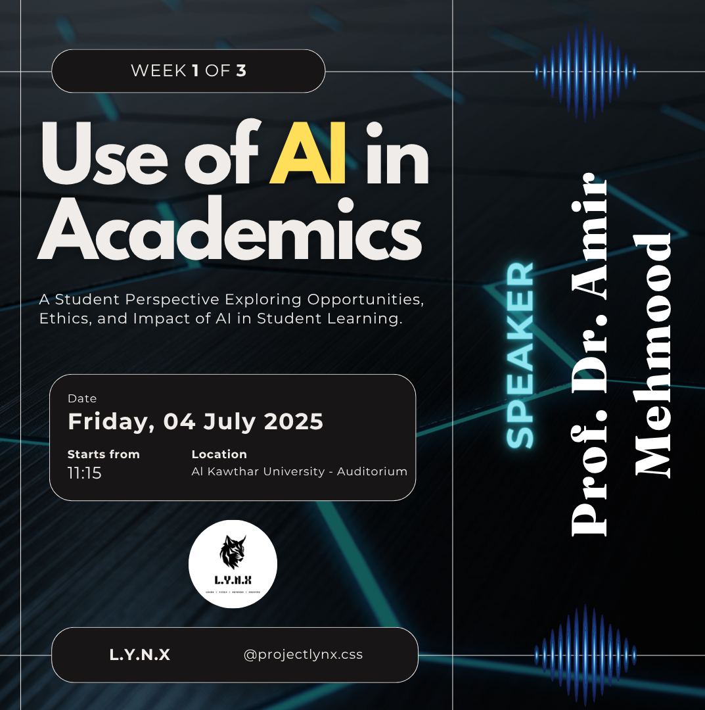

Every milestone, competition, workshop, and seminar that shaped the Project Lynx community.

Gain insights into different career paths, industry expectations and skills neede to build a successful future in technology. Special thanks to Miss Nida E. Rub for organizing this event for students.

An in-depth technical seminar exploring the evolution of Website development in the age of AI.

Students demonstrated their semester projects across disciplines including programming, digital logic, applied physics, and object-oriented programming — showcasing months of hard work to faculty and peers.
Intra-university esports tournament featuring five titles that brought competitive gamers from across campuses for two days of intense competition.

A two-day Capture The Flag cybersecurity workshop and competition that tested participants across web exploitation, cryptography, forensics, and reverse engineering challenges.

An in-depth technical seminar exploring the evolution of encryption from classical algorithms to quantum-resistant cryptography and the future of secure communications.

A practical podcast covering digital forensics, cyber law frameworks, and the governance structures shaping cybersecurity policy in Pakistan and globally.

Career guidance session helping students navigate degree choices, specializations, and industry entry points in the ever-expanding CS and IT landscape.

Exploring responsible use of artificial intelligence tools in academic research, writing, and learning — with a focus on critical thinking and academic integrity.
A hands-on session covering SEO, social media strategy, content creation, and personal branding for CS students entering the digital economy.
The inaugural Capture The Flag cybersecurity competition that launched Project Lynx's security track and established a tradition of technical excellence.
An inspiring keynote on using technology as a tool for social impact, ethical development, and building solutions that address real community challenges.